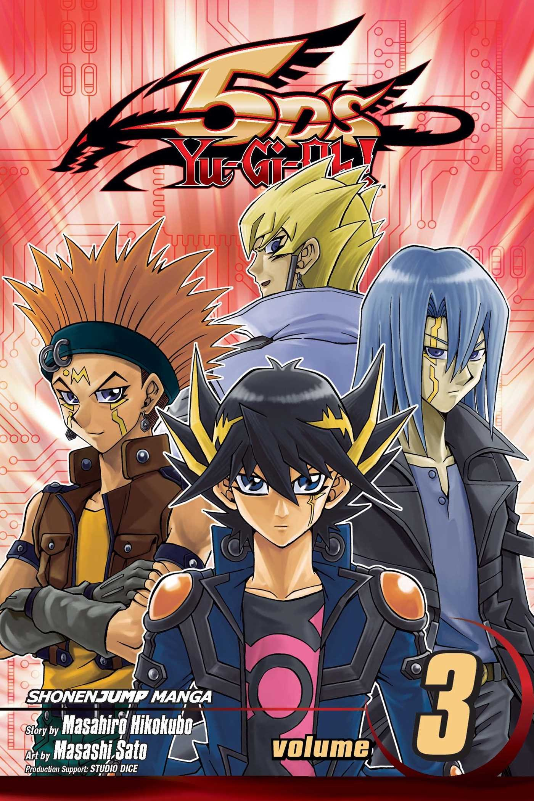
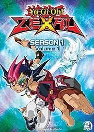
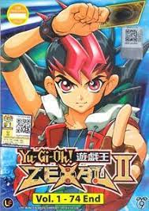

intro
Anime
La terza serie è Yu-Gi-Oh! 5D's, anch'essa nata come anime per poi essere trasposta in manga. Trasmessa dal 2 aprile 2008 in Giappone e arrivata in Italia nel 2009, questa serie coincide con l'uscita di nuove regole di gioco per il gioco di carte, e la comparsa di un nuovo tipo di carte: i "Mostri Synchro" (caratterizzati dal colore bianco della carta), che saranno largamente diffusi tra i protagonisti di questo nuovo anime, i mostri tuner che serviranno per l'evocazione dei già citati mostri synchro. In questa nuova serie animata, oltre ai tradizionali duelli con il Dueling Disk, alcuni duellanti si sfidano su particolari moto-dueling disk, chiamate "Duel Runner", e questi duellalli prendono il nome di "Duellanti Turbo". Dall'agosto 2009 la serie è stata trasposta in manga.
Manga
La quarta serie della saga è quella in cui vengono introdotte nuove carte: i Mostri Xyz, di colore nero. La serie nasce come manga per poi essere trasposta in anime come la prima serie. La messa in onda dell'anime in Giappone è iniziata l'11 aprile 2011 su TV Tokyo, mentre in Italia dal 9 giugno 2012 l'anime è andato in onda su K2; la pubblicazione del manga è iniziata invece nel 2010. La serie narra di Yuma Tsukumo, un ragazzo incapace di difendersi dai bulli della sua scuola il cui padre è scomparso durante una spedizione, senza lasciargli altro che un ciondolo. Un giorno Reginald Castle, detto Shark, il bullo della scuola, decide di sfidarlo a duello. La vera storia inizia quando, durante lo scontro, appare dinnanzi a Yuma un'entità proveniente dall'antico ciondolo, chiamata Astral, abitante di un altro mondo, chiamato Mondo Astrale, che gli dona un nuovo potere che solo Yuma e Astral sanno controllare. Questo potere è chiamato Zexal.
Gioco di carte
Magnifying glass icon mgx2.svg Lo stesso argomento in dettaglio: Yu-Gi-Oh! Zexal II. È il continuo della serie precedente. Dopo il Carnevale Mondiale di Duelli, la pace torna a Heartland, ma per poco: dei Bariani, emissari di Vector, arrivano sulla Terra alla ricerca delle carte Numero per distruggere il Mondo Astrale e resuscitano il loro dio, Don Thousand, sconfitto da Astral millenni prima. Yuma, Astral, Shark e Kite uniscono le forze per affrontare la nuova minaccia. In questa serie appaiono anche i Mostri CXyz (Chaos Xyz).